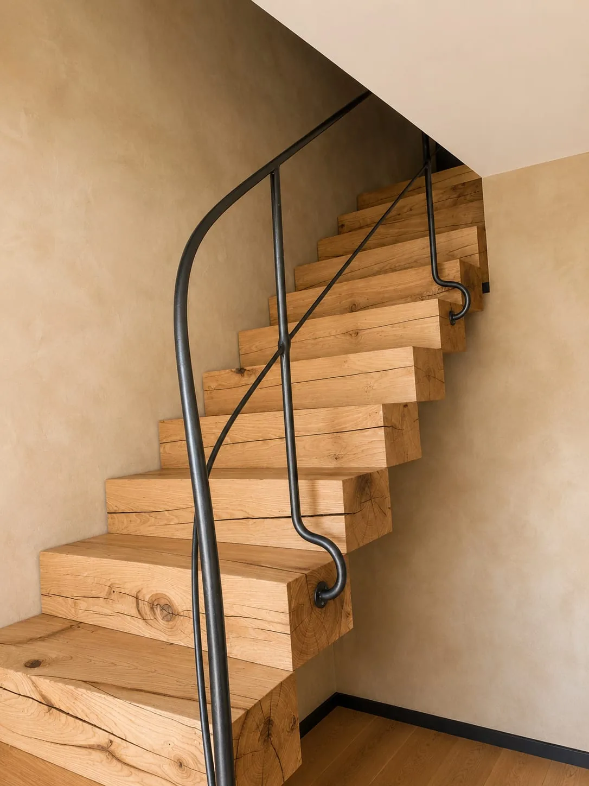

De la conception à la pose, chaque réalisation porte la marque d'un artisanat transmis et perpétué - gestes anciens, exigences contemporaines.
Nos métiers
Six familles d'ouvrages, une même exigence
Concevoir, calculer, fabriquer et poser des pièces uniques, adaptées à chaque projet. Voici les six univers dans lesquels nous mettons notre savoir-faire à votre service.

01
Escaliers & Garde-corps
Conception et fabrication d'escaliers métalliques, escaliers métal-bois, garde-corps, rampes et mains courantes sur mesure.
L'acier offre une grande liberté architecturale. Nos portes, fenêtres et ouvrages métalliques techniques s'intègrent avec élégance aussi bien dans les constructions contemporaines que dans les rénovations exigeantes, où le respect du caractère du bâtiment est essentiel.
Portes acierPortes vitréesFenêtres et portes série froideFenêtres et portes à rupture de pont thermiqueOuvrages techniques
La forge traditionnelle est au cœur de notre métier. Patine, sablage, galvanisation, masticage à l'ancienne, repoussage : les finitions d'autrefois prolongent la vie des ouvrages anciens et donnent leur caractère aux créations d'aujourd'hui.
Le vrai savoir-faire, c'est anticiper ce qu'on ne voit pas encore - et que les calculs confirment une fois sur place.
VI
Parlons de votre projet
Votre projet appartient à l'un de ces univers ?
Décrivez-nous votre idée, même approximativement. Nous vous répondrons pour discuter des possibilités, des délais et des contraintes techniques.
Le site metalleriemaringer.fr est édité par : MARINGER (Métallerie Maringer)
SAS au capital de 8 000 €
Siège social : 10 Rue de la Croix, 67310 Westhoffen
SIRET : 953 572 062 00016 - RCS Saverne 953 572 062
TVA intracommunautaire : FR55953572062
Le site est hébergé par OVH SAS
2 rue Kellermann, 59100 Roubaix, France www.ovhcloud.com
Conception du site
Site conçu et développé par WebKlein - L'Artisan du Web webklein.fr
Propriété intellectuelle
L'ensemble du contenu de ce site (textes, images, photographies, mise en page) est protégé par le droit de la propriété intellectuelle. Toute reproduction, représentation ou diffusion, en tout ou partie, est interdite sans autorisation écrite préalable.
Données personnelles
Pour toute information relative à la collecte et au traitement de vos données personnelles, consultez notre Politique de confidentialité.
Pour exercer vos droits : contact@metalleriemaringer.fr
Ce site n'utilise aucun cookie publicitaire ni outil de suivi tiers. Seuls des cookies strictement nécessaires au fonctionnement technique peuvent être utilisés.
Politique de confidentialité
Dernière mise à jour : Juillet 2026
1. Responsable du traitement
Métallerie Maringer
10 Rue de la Croix, 67310 Westhoffen, Alsace
Contact : contact@metalleriemaringer.fr
2. Données collectées
Via le formulaire de contact :
Nom et prénom
Adresse email
Numéro de téléphone
Type de projet (si renseigné)
Contenu du message
Données de navigation (collecte automatique) :
Adresse IP (anonymisée par l'hébergeur)
Type de navigateur et système d'exploitation
Pages consultées et durée de visite
3. Finalités
Les données collectées sont utilisées exclusivement pour répondre à vos demandes de contact et assurer le bon fonctionnement technique du site. Aucune utilisation commerciale, publicitaire ou de profilage.
4. Base légale
Intérêt légitime pour les données de navigation (fonctionnement du site)
Consentement pour les données transmises via le formulaire
5. Destinataires
Les données sont destinées uniquement à la Métallerie Maringer. Aucune transmission à des tiers, sauf obligation légale.
6. Durée de conservation
Données du formulaire : 12 mois maximum
Données de navigation : 1 an maximum
7. Cookies
Ce site n'utilise aucun cookie publicitaire, de suivi ou d'analyse comportementale. Seuls des cookies strictement nécessaires au fonctionnement technique peuvent être déposés.
8. Vos droits
Conformément au RGPD, vous disposez des droits suivants :
Accès : obtenir une copie de vos données
Rectification : corriger des données inexactes
Effacement : demander la suppression
Opposition : vous opposer au traitement
Limitation : restreindre le traitement
Portabilité : recevoir vos données dans un format structuré
Pour exercer ces droits : contact@metalleriemaringer.fr
Délai de réponse : un mois maximum.
9. Réclamation
En cas de différend, vous pouvez saisir la CNIL : Commission Nationale de l'Informatique et des Libertés
3 Place de Fontenoy, TSA 80715, 75334 Paris Cedex 07 www.cnil.fr